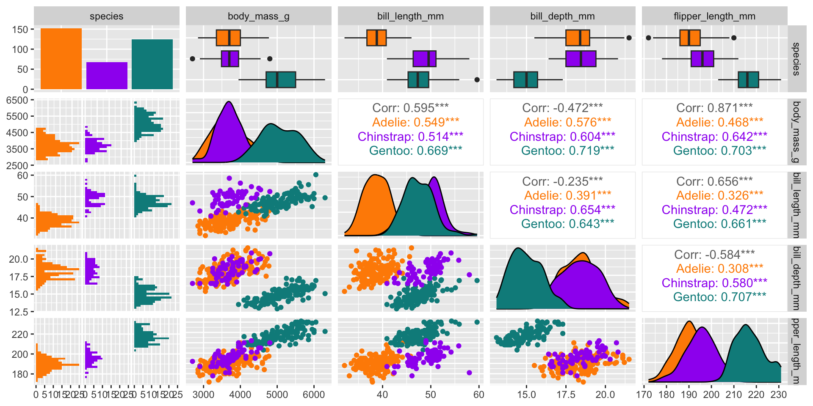
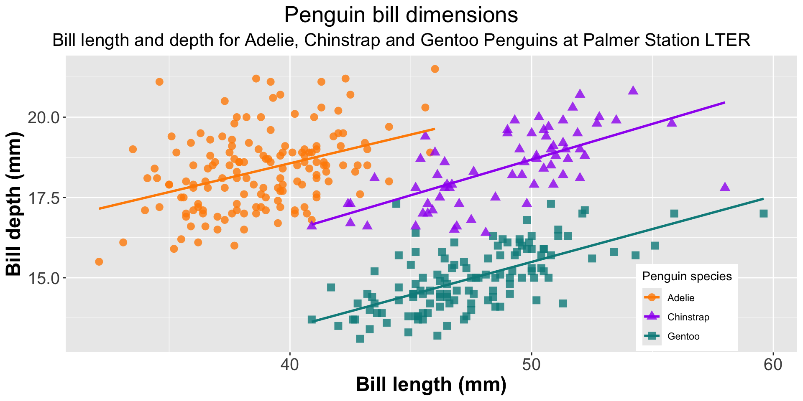

library(vegan)
data(mite)
data(mite.env)
View(mite)
View(mite.env)Data used for this course
Illustrative datasets
To illustrate the different models and methods we will discuss in this course, we will rely on a few data sets, which are directly available in different R packages
. . .
mite,mite.envandmite.xyavailable in theveganR package
. . .
penguinsavailable in thepalmerpenguinsR package
. . .
These datasets are practical because they are manageable in size and will allow you to see how to work out the different example presented in this course.
. . .
Let’s look at them in more details…
Oribatid mite
Oribatid mite data
Aside from being very interesting, this dataset has been sampled at the Station biologique des Laurentides, so ~200 km north-west from here.
. . .
Sampling was carried out in June 1989 on the partially floating vegetation mat surrounding a lake, from the forest border to the free water by Daniel Borcard.

Oribatid mite data
. . .
Oribatid mites are small (usually ranging in size from 0.2 to 1.4 mm) invertebrates that are part of the Arachnida class (so they have 8 legs).

. . .
In the mite data, 35 morphospecies were identified and counted across 70 samples.
Sites coordinates
mite.xy

Vegetation cover
mite.env

Microtopography and shrub cover
mite.env

Substrate density and water content
mite.env

Getting the data
Palmer penguins

These data were collected from 2007 to 2009 by Dr. Kristen Gorman with the Palmer Station Long Term Ecological Research Program, part of the US Long Term Ecological Research Network.
. . .
The data were imported directly from the Environmental Data Initiative (EDI) Data Portal, and are available for use by CC0 license (“No Rights Reserved”) in accordance with the Palmer Station Data Policy. (Gorman, Williams, and Fraser 2014; Horst, Hill, and Gorman 2020)
A handy dataset of three groups

Behold: Simpson’s Paradox!

Behold: Simpson’s Paradox!

There’s lots more!
library(palmerpenguins)
View(penguins)
View(penguins_raw)and also see the official site: https://allisonhorst.github.io/palmerpenguins/
References
Gorman, Kristen B., Tony D. Williams, and William R. Fraser. 2014. “Ecological Sexual Dimorphism and Environmental Variability Within a Community of Antarctic Penguins (Genus Pygoscelis).” PLOS ONE 9 (3): e90081. https://doi.org/10.1371/journal.pone.0090081.
Horst, Allison Marie, Alison Presmanes Hill, and Kristen B Gorman. 2020. Palmerpenguins: Palmer Archipelago (Antarctica) Penguin Data. https://doi.org/10.5281/zenodo.3960218.